Code is here:
http://bit.ly/2rd7er0


brew install mosquitto
run mosquitto from terminal
Open 2 terminals
In the first type: mosquitto_sub -h 127.0.0.1 -t topic
In the second type: mosquitto_pub -h 127.0.0.1 -t topic -m "message"
Public MQTT Server
In the first type: mosquitto_sub -h ec2-34-211-197-42.us-west-2.compute.amazonaws.com -t /test
In the second type: mosquitto_pub -h ec2-34-211-197-42.us-west-2.compute.amazonaws.com -t /test -m "message"
Connect Some Neopixels
Open espmqtt_neopixel2
Set wifi on lines 25 and 26
On line 64 change /test to /yourfirstname
Install Arduino MQTT Library
Upload mqtt_neopixels
mosquitto_pub -h ec2-34-211-197-42.us-west-2.compute.amazonaws.com -t /yourfirstname -m "1"
cd ws_mqtt_express, run node index.js
cd speak_mqtt, run node index.js
Setting up an Amazon Server

Log on to the AWS console
Hit the Launch Instace button
Choose an OS, we will use Ubuntu Server 16.04
Choose the instace type, t2.nicro
Hit Launch
Create a new Key Pair and download the key, make a new folder save it there
Wait for instance to Launch
Connect to you instance
Mac users connect this way
From the terminal, cd to the folder where you saved your key
'chmod 400 yourkeyname.pem' Do this only once
'ssh -i "yourkeyname.pem" yourserver.compute.amazonaws.com
Once you are connected, you should have a window like this
Lets update the system
'sudo apt-get update'
'sudo apt-get upgrade'
Install NodeJS
'sudo apt-get install nodejs
'sudo apt-get install npm'
'sudo npm install n -g'
'sudo n latest'
sudo ln -s `which nodejs` /usr/bin/node
We need to open some ports
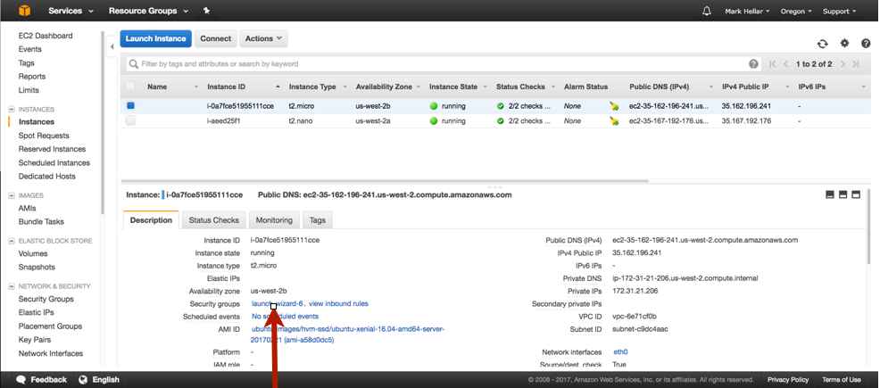
Click on the security group for your server
Click the Inbound Tab
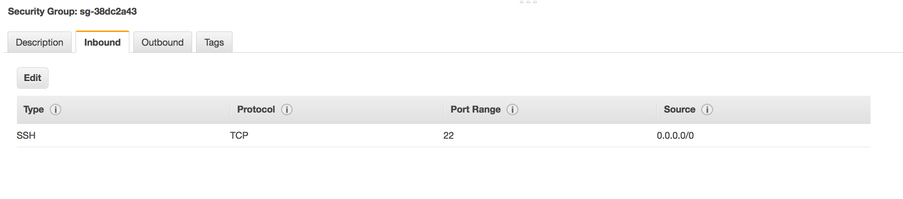
Currently the only port that is open is 22 for SSH
Hit edit, the add rule
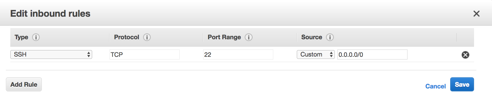
Add the following rules and then save
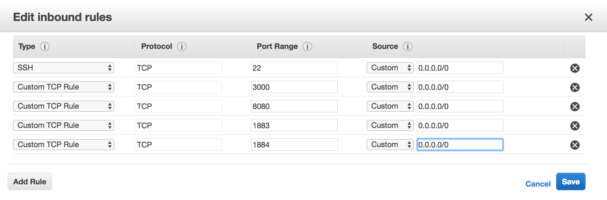
Mosquitto is an open source MQTT server, Lets install it.
sudo apt-get install mosquitto mosquitto-clients
Test it out with mqtt.fx, subscribe to a topic

Publish to the same topic
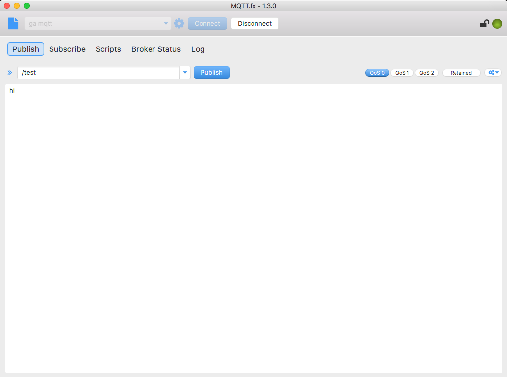
npm install mqtt -g
Then, on one terminal
mqtt sub -t '/hello' -h 'yourserver' -v
On another terminal
mqtt pub -t '/hello' -h 'yourserver' -m 'from MQTT.js'
In the code folder open mqtt_ws in a text editor
Edit line of index.js 2 and change it to your server
Note on line 14 the topic is /hello
In the terminal cd to mqtt_js
npm install
Node index.js
Open localhost:3000 in the webrowser
Publish to /hello with mqtt.fx
Open Filezilla and go to the settings tab
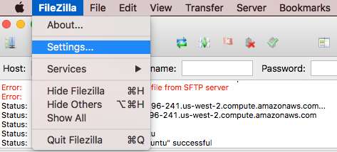
Open Filezilla and go to the settings tab
Under the SFTP option add the key you doanloaded from AWS and hit ok
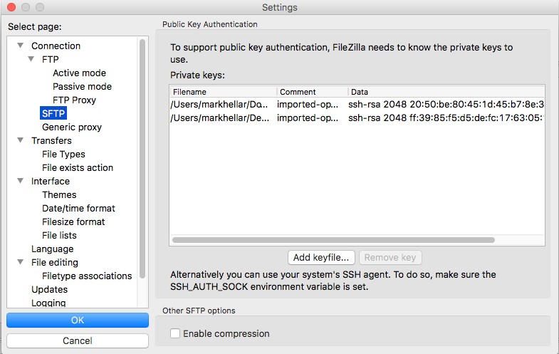
Open the Site Manager, set the host to the address of your server, protocol is sftp
Logon type is interactive and the User is Ubuntu, then hit connect
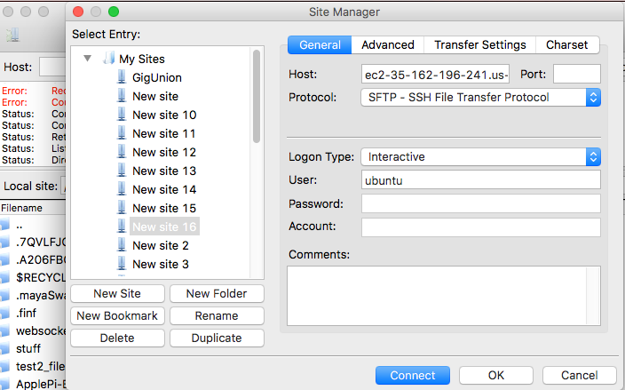
Edit line 15 of Index.html in mqtt.js and chage localhost to your server
Go to the mqtt_ws folder, delete the node_modules folder and upload with filezilla
Go to the terminal where you are logged into your server
Type ls, the cd mqtt_ws, npm install, then node index.js
In a webbrowser, go to your servers address:3000
Publish some data to the topic /helllo
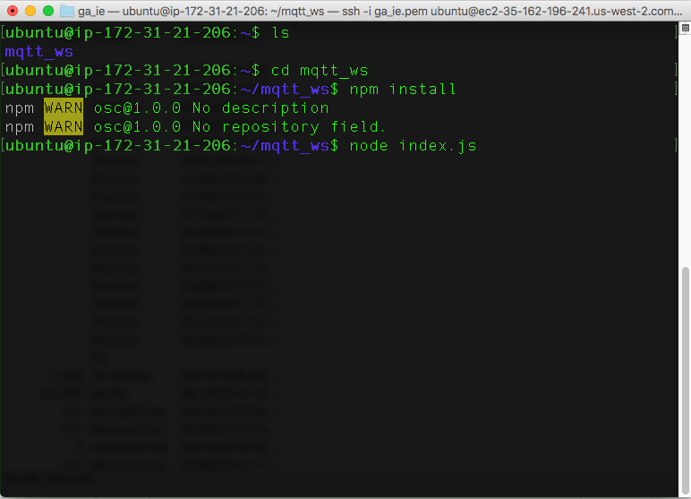
Connect a potentiometer to the nodemcu
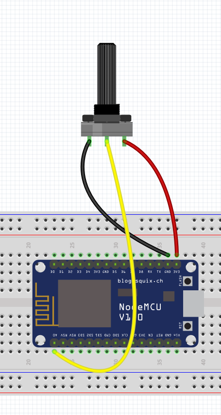
Open mqttAnalogSend in the Arduino IDE, and edit line 32 to match your server
Upload and check your page
MQTT.JS
https://www.npmjs.com/package/mqtt
We can connect our ESP8266 to the MQTT server
Connect some neopixels
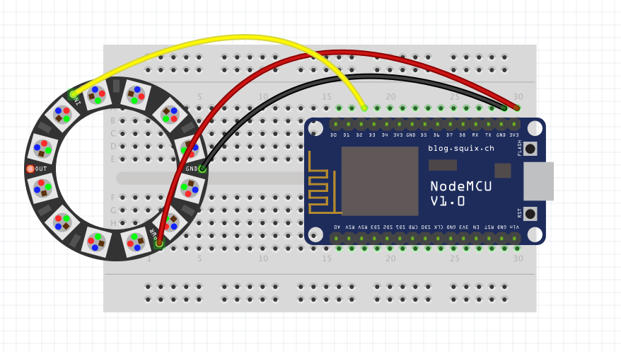
Open espmqtt_neopixel2 in the Arduino IDE, and edit line 43 to match your server
Upload espmqtt_neopixel
mqtt pub -t '/hello' -h 'yourserver' -m '1'
mqtt pub -t '/hello' -h 'yourserver' -m '2'
mqtt pub -t '/hello' -h 'yourserver' -m '3'
A note on MQTT topics
https://mosquitto.org/man/mqtt-7.html
cd ws_mqtt_express, run node index.js
cd speak_mqtt, run node index.js
We can enable websockets on the Mosqitto Server, Hoorah!
http://blog.ithasu.org/2016/05/enabling-and-using-websockets-on-mosquitto/
In the SSH terminal connected to your server
wget http://repo.mosquitto.org/debian/mosquitto-repo.gpg.key
sudo apt-key add mosquitto-repo.gpg.key
sudo wget http://repo.mosquitto.org/debian/mosquitto-jessie.list
sudo apt-get update
sudo apt-get dist-upgrade
sudo nano /etc/mosquitto/conf.d/websocket.conf
Paste:
listener 1883
listener 1884
protocol websockets
Hit CTRL + O
sudo service mosquitto restart
Open websocket_mqtt in your text editor, and edit line 10 to match your server
Save and double click index.html in you webbroser, hit the buttons
browserMqtt.js allows us to send mqtt messages from an HTML5 native websocket, this is great for enviroments where node are not available
https://rubberchickin.com/mqtt-js-download-for-ionicangular-client-use/
For example, your github pages or a HTML5 mobile app
Let's make a mobile app

Make new folder called ionic_apps
cd to that folder in the terminal
ionic start myApp blank --v1
cd myApp
ionic serve
cd to myMqttApp in todays code folder
cd to that folder in the terminal
cd myApp
drag myMqttApp onto your text editor
open www/index.html
Push the app to you phone
Sign Up For an Ionic Account
In the terminal 'ionic upload'
Got o the ionic view app on you phone
Lets connect our ESP8266 to the MQTT server
Connect some neopixels
Open espmqtt_neopixel2 in the Arduino IDE, and edit line 43 to match your server
Upload espmqtt_neopixel
mqtt pub -t '/hello' -h 'yourserver' -m '1'
mqtt pub -t '/hello' -h 'yourserver' -m '2'
mqtt pub -t '/hello' -h 'yourserver' -m '3'
A note on MQTT topics
https://mosquitto.org/man/mqtt-7.html